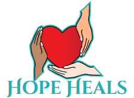

diff --git a/index.html b/index.html
index eed34c5..5c495fc 100644
--- a/index.html
+++ b/index.html
@@ -1,13 +1,17 @@
 <!DOCTYPE html>
 <html lang="en">
+
 <head>
     <meta charset="UTF-8">
     <meta name="viewport" content="width=device-width, initial-scale=1.0">
-    <meta name="description" content="HOPE Heals San Antonio - A coalition led by individuals with firsthand experience of homelessness, dedicated to capacity building, supportive services, and advocacy in San Antonio.">
-    <meta name="keywords" content="San Antonio Nonprofit Coalition, capacity building, supportive services, advocacy, community training, unsheltered populations, firsthand experience">
+    <meta name="description"
+        content="HOPE Heals San Antonio - A coalition led by individuals with firsthand experience of homelessness, dedicated to capacity building, supportive services, and advocacy in San Antonio.">
+    <meta name="keywords"
+        content="San Antonio Nonprofit Coalition, capacity building, supportive services, advocacy, community training, unsheltered populations, firsthand experience">
     <meta name="author" content="HOPE Heals San Antonio">
     <meta property="og:title" content="HOPE Heals San Antonio | Having Only Positive Expectations">
-    <meta property="og:description" content="A coalition led by individuals with firsthand experience of homelessness. Our work is guided by real-life expertise—capacity building, supportive services, and advocacy.">
+    <meta property="og:description"
+        content="A coalition led by individuals with firsthand experience of homelessness. Our work is guided by real-life expertise—capacity building, supportive services, and advocacy.">
     <meta property="og:type" content="website">
     <meta name="twitter:card" content="summary_large_image">
     <title>HOPE Heals San Antonio | Capacity Building & Advocacy Coalition</title>
@@ -16,8 +20,11 @@
     <link rel="stylesheet" href="style.css">
     <link rel="preconnect" href="https://fonts.googleapis.com">
     <link rel="preconnect" href="https://fonts.gstatic.com" crossorigin>
-    <link href="https://fonts.googleapis.com/css2?family=Merriweather:wght@400;700&family=Open+Sans:wght@400;500;600;700&display=swap" rel="stylesheet">
+    <link
+        href="https://fonts.googleapis.com/css2?family=Merriweather:wght@400;700&family=Open+Sans:wght@400;500;600;700&display=swap"
+        rel="stylesheet">
 </head>
+
 <body>
     <header class="header" id="header">
         <nav class="nav container">
@@ -46,9 +53,13 @@
         <section class="hero" id="home">
             <div class="hero-overlay"></div>
             <div class="hero-content container">
-                <p class="hero-acronym"><strong>H</strong>aving <strong>O</strong>nly <strong>P</strong>ositive <strong>E</strong>xpectations</p>
+                <p class="hero-acronym"><strong>H</strong>aving <strong>O</strong>nly <strong>P</strong>ositive
+                    <strong>E</strong>xpectations
+                </p>
                 <h1 class="hero-title">Building Capacity.<br>Strengthening Community.</h1>
-                <p class="hero-subtitle">We are a coalition led by individuals with firsthand experience of homelessness. Our work is guided by real-life expertise—strengthening those who help others transition with dignity.</p>
+                <p class="hero-subtitle">We are a coalition led by individuals with firsthand experience of
+                    homelessness. Our work is guided by real-life expertise—strengthening those who help others
+                    transition with dignity.</p>
                 <div class="hero-buttons">
                     <a href="#involved" class="btn btn-primary">Make a Pledge</a>
                     <a href="#story" class="btn btn-secondary">Learn More</a>
@@ -77,35 +88,46 @@
                     <div class="section-divider"></div>
                 </div>
                 <div class="story-hero">
-                    
+                    
                 </div>
                 <div class="story-content">
                     <div class="story-text">
                         <h3>Our Mission</h3>
-                        <p>We are a coalition led by individuals with firsthand experience of homelessness. Our work is guided by real-life expertise—strengthening the community by supporting those who help people transition with dignity.</p>
+                        <p>We are a coalition led by individuals with firsthand experience of homelessness. Our work is
+                            guided by real-life expertise—strengthening the community by supporting those who help
+                            people transition with dignity.</p>
                         <h3>Our Aim</h3>
-                        <p>We bring people together and build healthy relationships to support those working to permanently transition out of homelessness. Through capacity building, training, and coordination, we're creating a more compassionate San Antonio—one that responds to unsheltered neighbors with dignity and effective supportive services.</p>
+                        <p>We bring people together and build healthy relationships to support those working to
+                            permanently transition out of homelessness. Through capacity building, training, and
+                            coordination, we're creating a more compassionate San Antonio—one that responds to
+                            unsheltered neighbors with dignity and effective supportive services.</p>
                         <div class="founder-section">
                             <h3>Street Outreach Leadership</h3>
-                            <p>Chris Parker serves as our Street Pastor, using a relationship-centered approach to build trust and mentor individuals through their transition journey. Through compassionate street case management, he helps neighbors navigate resources and services with patience and understanding.</p>
+                            <p>Chris Parker serves as our Street Pastor, using a relationship-centered approach to build
+                                trust and mentor individuals through their transition journey. Through compassionate
+                                street case management, he helps neighbors navigate resources and services with patience
+                                and understanding.</p>
                         </div>
                     </div>
                     <div class="story-values">
                         <div class="value-card">
                             <div class="value-icon">
                                 <svg viewBox="0 0 24 24" fill="none" stroke="currentColor" stroke-width="2">
-                                    <path d="M12 2L2 7l10 5 10-5-10-5zM2 17l10 5 10-5M2 12l10 5 10-5"/>
+                                    <path d="M12 2L2 7l10 5 10-5-10-5zM2 17l10 5 10-5M2 12l10 5 10-5" />
                                 </svg>
                         